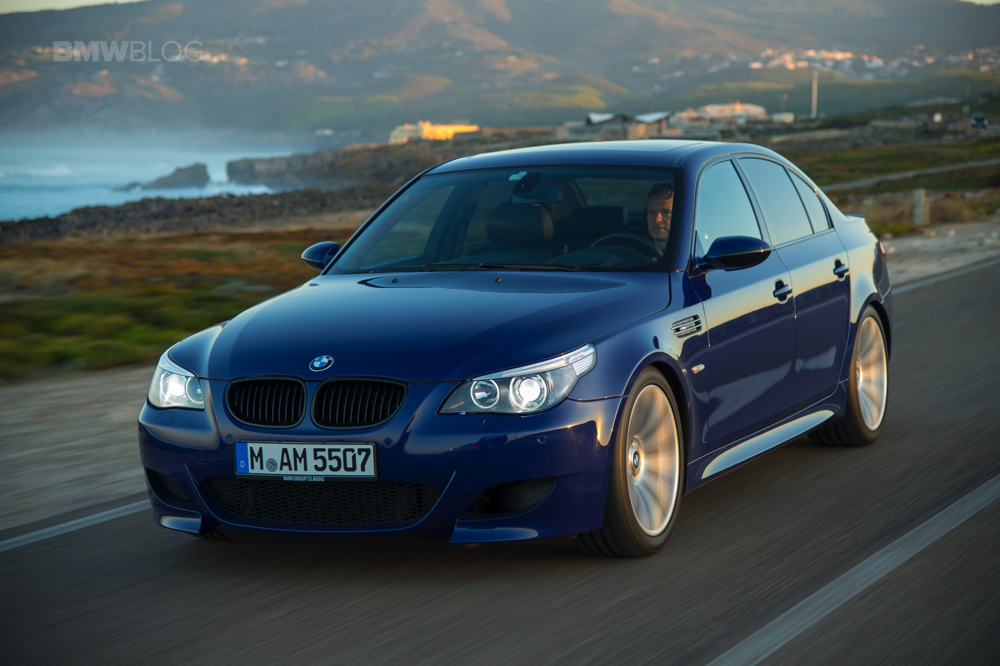

The development programme for the E60 began in 1997, concluding in 2002. The lead designer was Boyke Boyer.[citation needed] The final design, developed by Davide Arcangeli (d. 2002) under BMW Design Director Chris Bangle,[9][10] was approved in 2000 and German design patents filed on April 16, 2002.[11]
The sedan was launched on July 5, 2003 in Europe and in October 2003 in North America.[12][13][14] In late 2004, the estate was introduced.
The E60 was the first BMW product below the BMW 7 Series (E65) flagship to offer the iDrive control system, which integrated entertainment, climate, communications, and vehicle settings into one unit with a color LCD display screen mounted at the top center of the dashboard, and a control dial located near the transmission gear lever or shifter. A smaller unit was introduced that offered all of the features of the larger iDrive unit except for GPS navigation capabilities.

The BMW E60/E61 series is the fifth generation of the BMW 5 Series, which was sold from 2003 to 2010. The body styles of the range are:
4-door sedan/saloon (E60 model code)
5-door estate/wagon (E61 model code, marketed as "Touring")
The E60/E61 introduced various new electronic features to the 5 Series, including iDrive, head-up display, active cruise control, active steering and voice control. The E60/61 also was the first 5 Series to be available with a turbocharged petrol engine, a 6-speed automatic transmission and regenerative braking. New safety features for the E60/E61 included adaptive headlights, night vision, active headrests, Lane Departure Warning and high intensity emergency brake lights. Unlike the three previous generations of 5 Series[6][7] and the F10 successor,[8] the E60/E61 centre console is not angled towards the driver.
The E60/E61 was replaced by the F10/F11 5 Series in 2010.
The M5 variant was released in 2005 and is powered by the S85 V10 engine. It was sold in the sedan and wagon body styles, with most cars using a 7-speed automated manual transmission ("SMG III").